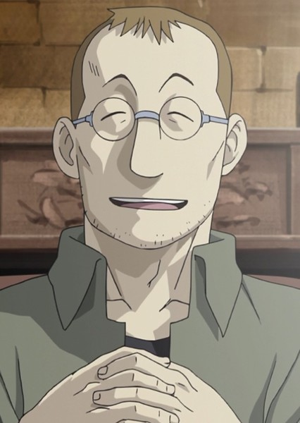
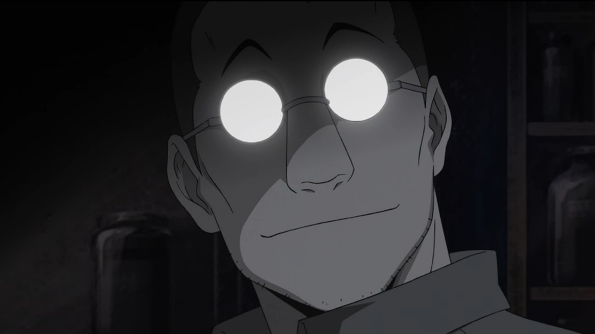
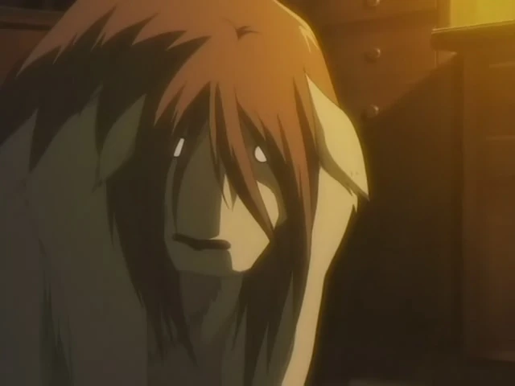
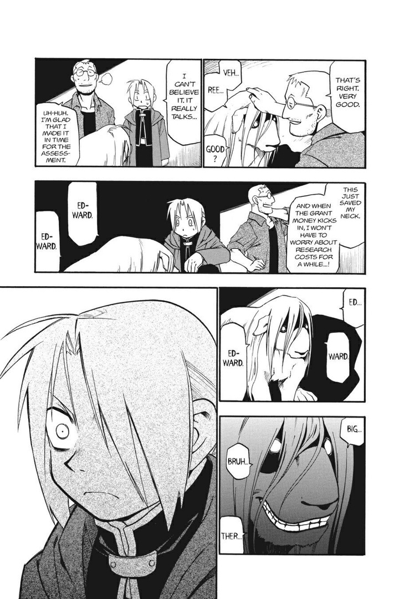
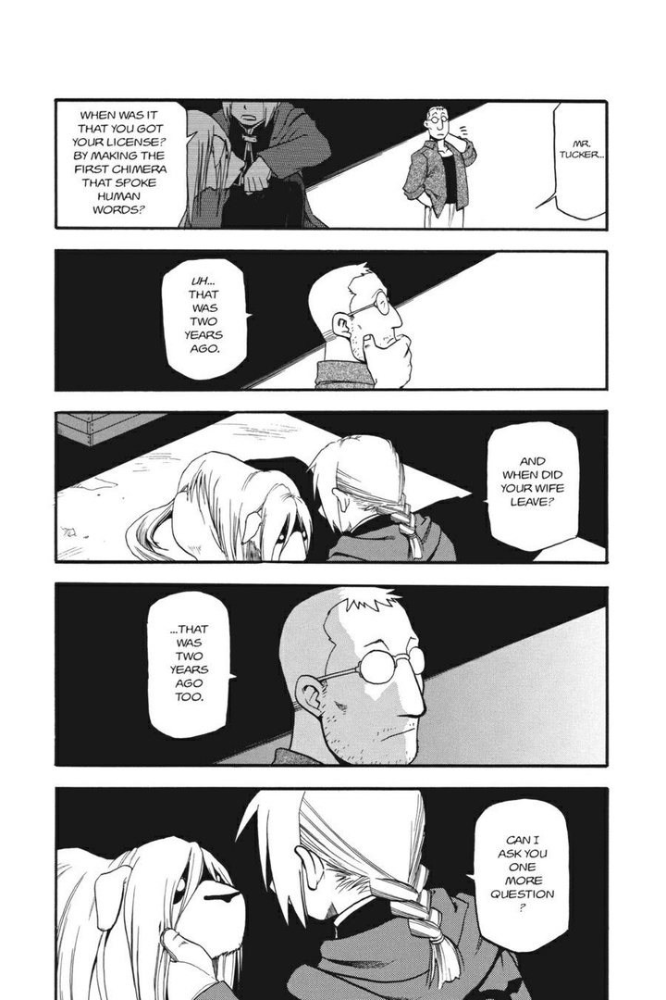
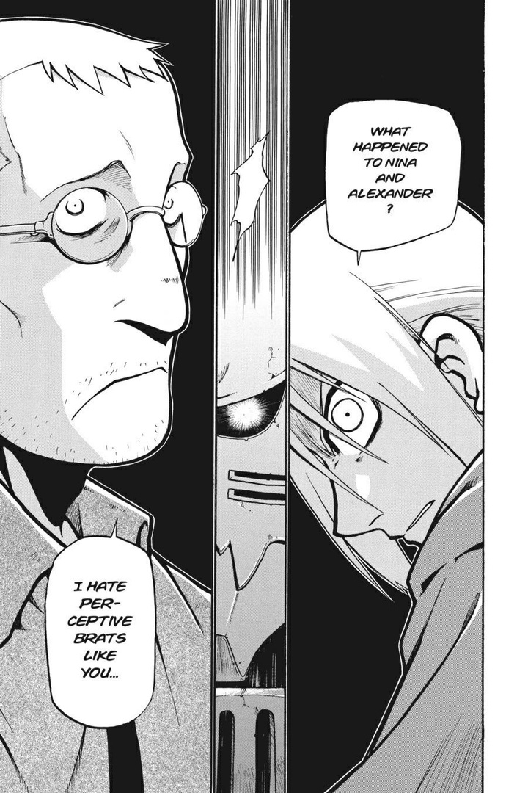
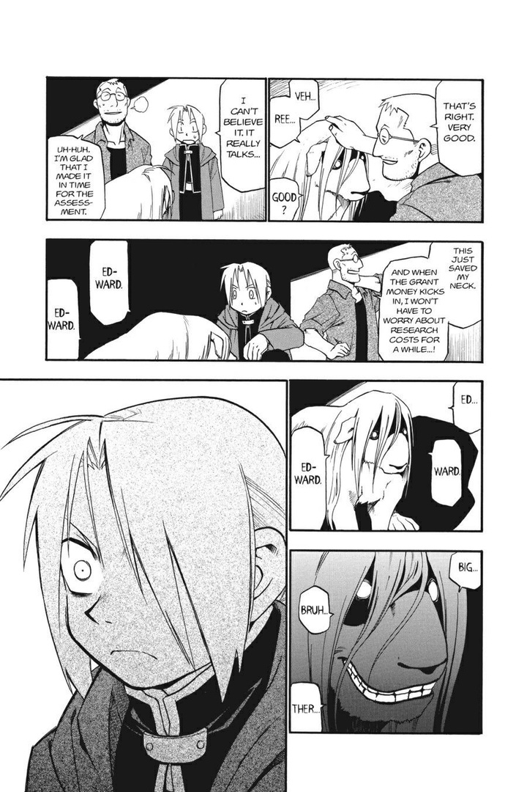
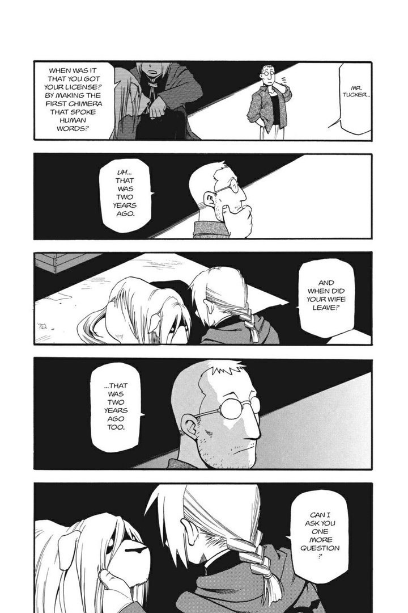
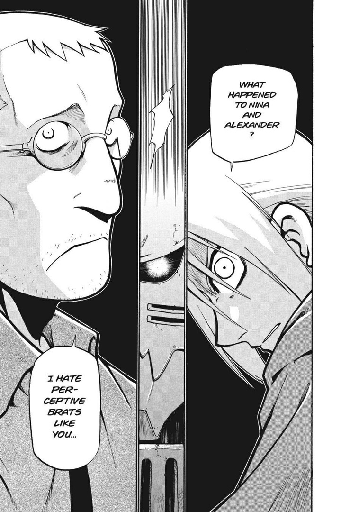

Why we HATE Shou Tucker
Who is Shou Tucker?
Even anime fans who have not watched the show have probably heard the name Tucker mentioned here and there, in the most morbid context, but who is he? Shou is from Full Metal Alchemist. He first comes off as a soft-spoken but asocial man, often preferring to keep to himself rather than spend time with others. When having guests, he does put on a polite persona and appears to be quite gentle, friendly, and kind. However, as his daughter Nina had begun to notice, he was more often engrossed with his work than his family. However, in actuality Shou suffered from a lack of confidence due to his research not producing any viable results and is a very desperate, delusional, selfish, and manipulative man devoid of any sort of conscience.

What was the horrible thing he did?
New Talking Chimera
Now here's where things take a dark turn: Ed and Al return to Shou's home to play with Nina his daughter, calling her name to no avail as for some reason they can't find her. The boys search around the house until they find Shou in his laboratory, presenting the two brothers with another talking chimera that he created. At first, the two brothers are impressed...until the chimera lets out a slip of the tongue, causing Ed to become suspicious. Ed then asks where Nina and Alexander are, which Shou has literally nothing to answer with except to say he hates kids with good instincts like Ed.

First talking chimera
Ed asks Shou when he first became a State Alchemist with his original talking chimera, with which he answers "2 years ago"...the same time his wife apparently left him., Shou's first chimera that starved itself to death two years ago was his own wife, and this time, he's merged Nina and Alexander together physically (and probably mentally) to make another one.
The related manga pages
 





For more Info about shou tucker go to Fandom Wiki
And for more info on Full Metal Alchemist go to Fandom Wiki
Created By Sarah Ayres